Grupo F
 Túnez
Túnez
Suecia vs Túnez
📅 2026-06-14 · 🕒 21:00 (Local)
Suecia

5 - 1
FINALIZADO
Túnez
📅 2026-06-14 · 🕒 21:00 (Local)
Túnez
Suecia protagonizó una exhibición de verticalidad y contundencia al golear 5-1 a Túnez en el estreno del Grupo F. El cuadro escandinavo hizo pagar caro a Túnez su estilo de posesión pasiva y posesiones largas inofensivas. Aunque Túnez tuvo mayor control del balón en el círculo central gracias a Laïdouni y Skhiri, la falta de profundidad ofensiva y sus pérdidas en la salida fueron letales. Suecia castigó mediante transiciones rápidas y directas dirigidas a Forsberg e Isak, mostrando una efectividad demoledora del 14% que desmanteló por completo la línea defensiva tunecina.
La abrumadora ventaja de Suecia en la duración del liderazgo de intensidad (56.4% frente al 31.9% de Túnez) dictaminó una dinámica de dominio sostenido que se correlaciona directamente con el marcador final de 5-1. El pico de intensidad de ataque sueco, casi absoluto con 98.00 en el minuto 37', señala un periodo de presión ofensiva asfixiante y alta probabilidad de conversión, probablemente cimentando una ventaja significativa antes del descanso. Por contra, el pico tunecino de 92.00 en el minuto 57', aunque notable, fue inferior y tardío, evidenciando una reacción en la segunda mitad para generar peligro que, si bien les permitió anotar, fue insuficiente para revertir la dinámica. Esta disparidad temporal y cualitativa en los flujos de intensidad de ataque dictó los momentos de mayor peligro y la capacidad de ambos equipos para capitalizar sus oportunidades, reflejándose en la abultada diferencia goleadora.
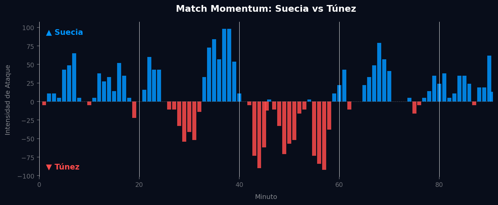
El mapa de calor sueco muestra un equipo con buena presencia en ambas mitades del campo, con dos zonas de concentración bien definidas en el ataque (una hacia el centro-derecha del último tercio y otra más cercana al área rival), lo que sugiere llegadas frecuentes por el medio y posibilidad de generar peligro desde distintas posiciones. La red de pases, sin embargo, llama la atención por su estructura poco interconectada: se observan agrupaciones aisladas, como el triángulo defensivo entre Lindelöf, Olsson y Larsson, y una conexión larga y directa que va desde Isak hasta Forsberg y termina en Augustinsson. Esto refleja un estilo de juego más directo, con menos circulación y más balones largos o cambios de banda para encontrar espacios rápidamente.
El mapa de amenaza esperada confirma esa idea: hay celdas con valores de generación muy altos en zonas específicas del último tercio, indicando que cuando Suecia conecta esas jugadas directas, el peligro generado es considerable. El mapa de conducciones progresivas muestra un volumen importante de carreras con balón, especialmente concentradas en la mitad ofensiva, lo que indica que una vez recuperan el balón, avanzan con rapidez. En defensa, el mapa de acciones muestra una presión intensa y bien distribuida por todo el campo, similar a la de otros equipos de alto nivel competitivo.
En cuanto a definición, los números son sólidos: 36 disparos y 5 goles, una tasa de conversión cercana al 14%, con los remates concentrados dentro y cerca del área, y varios goles agrupados en zonas de alto peligro.
El mapa de calor tunecino cuenta una historia muy distinta: hay una enorme concentración de actividad en el medio campo y en su propia mitad, con una zona gris muy amplia que indica que pasan mucho tiempo en esas áreas, pero su presencia en el último tercio rival es notablemente más escasa y oscura. Esto sugiere un equipo que controla el balón en zonas intermedias pero tiene dificultades para progresar con consistencia hacia el área contraria.
La red de pases muestra una estructura central razonable, con Maâloul, Laïdouni, Skhiri y Ghandri como conectores importantes, pero también se ven varios jugadores ofensivos bastante aislados (Jebali, Abdi, Chalali), lo que indica que el ataque depende de pocas conexiones efectivas hacia el frente. El mapa de amenaza esperada muestra una generación de peligro muy baja en general, con apenas un par de celdas destacadas cerca del área rival, reflejo de las pocas ocasiones claras que logran crear. El mapa de conducciones progresivas tiene buen volumen en el medio campo, pero se nota una caída en la cantidad de carreras que realmente llegan a zonas peligrosas del último tercio. El mapa defensivo muestra una intensidad de presión considerable, especialmente concentrada en el medio campo y zona defensiva.
El dato más llamativo es el de definición: con 31 disparos, Túnez apenas convirtió 1 gol, una tasa de conversión de alrededor del 3%, con la mayoría de los remates desde fuera del área o en posiciones de poco peligro.

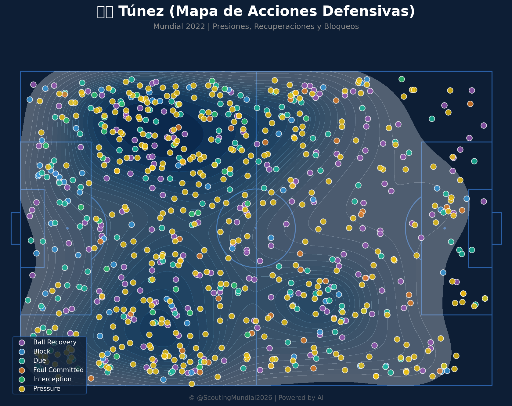

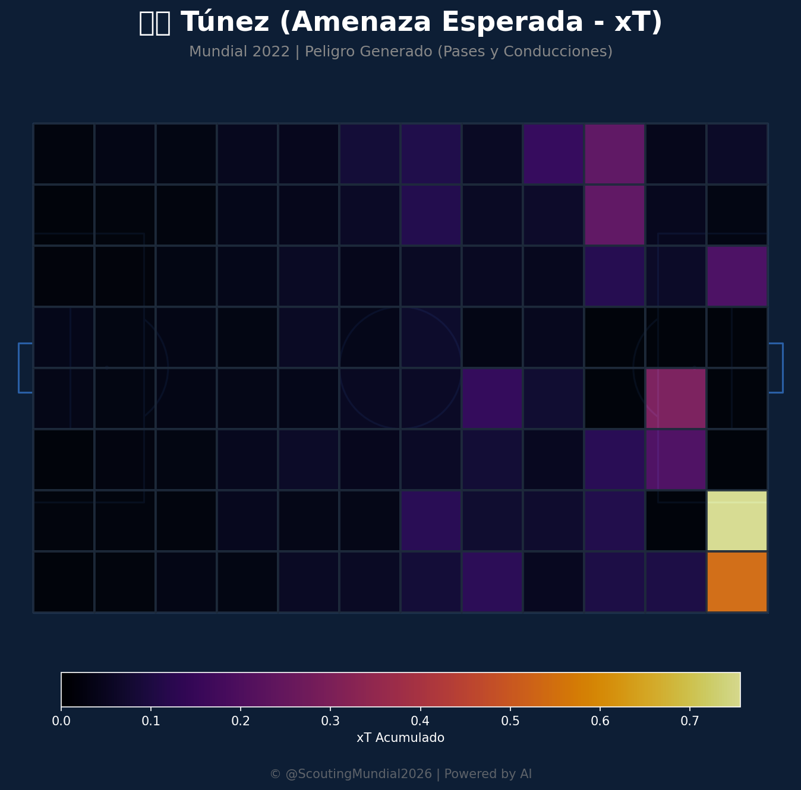
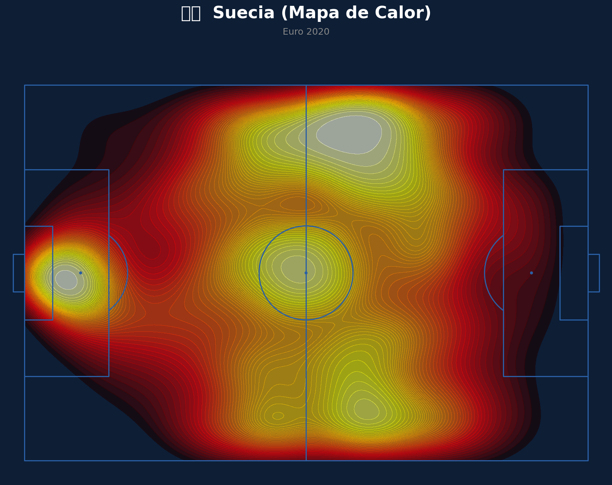
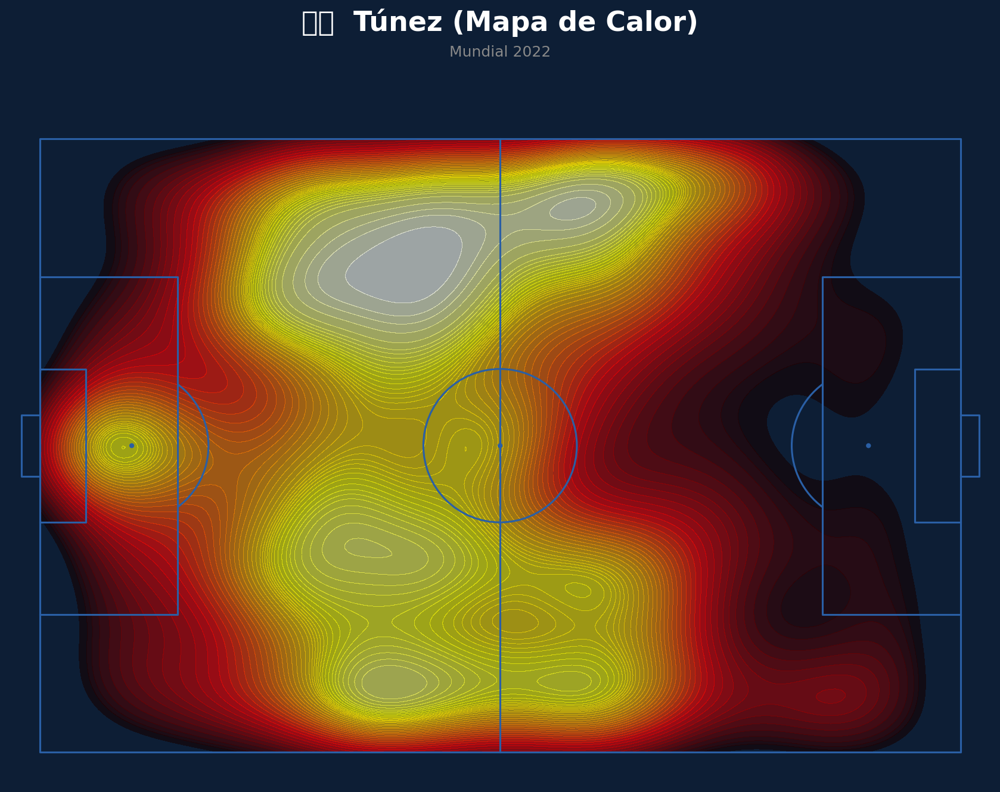
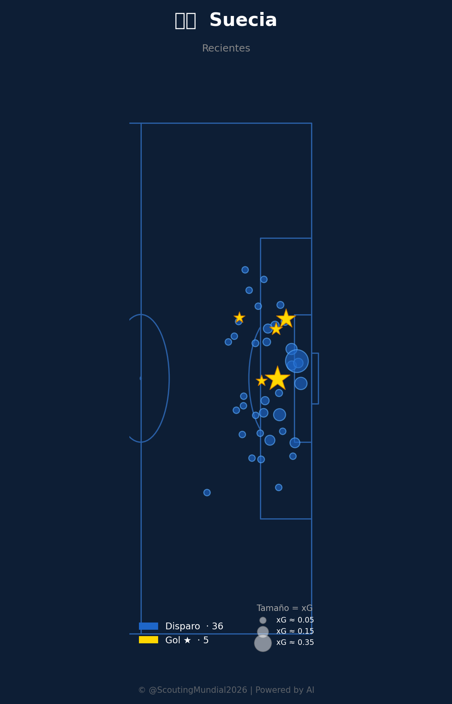
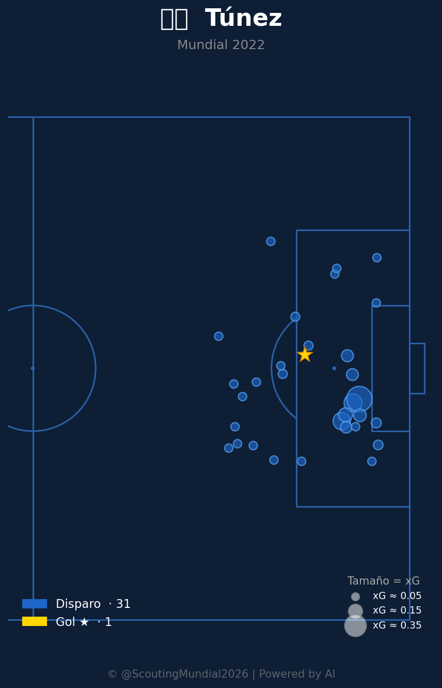
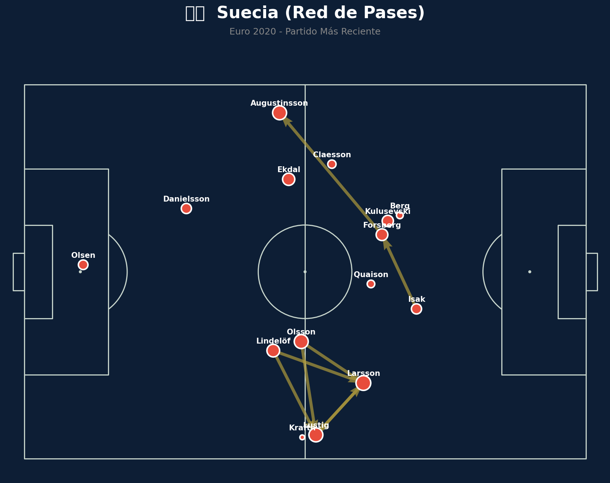
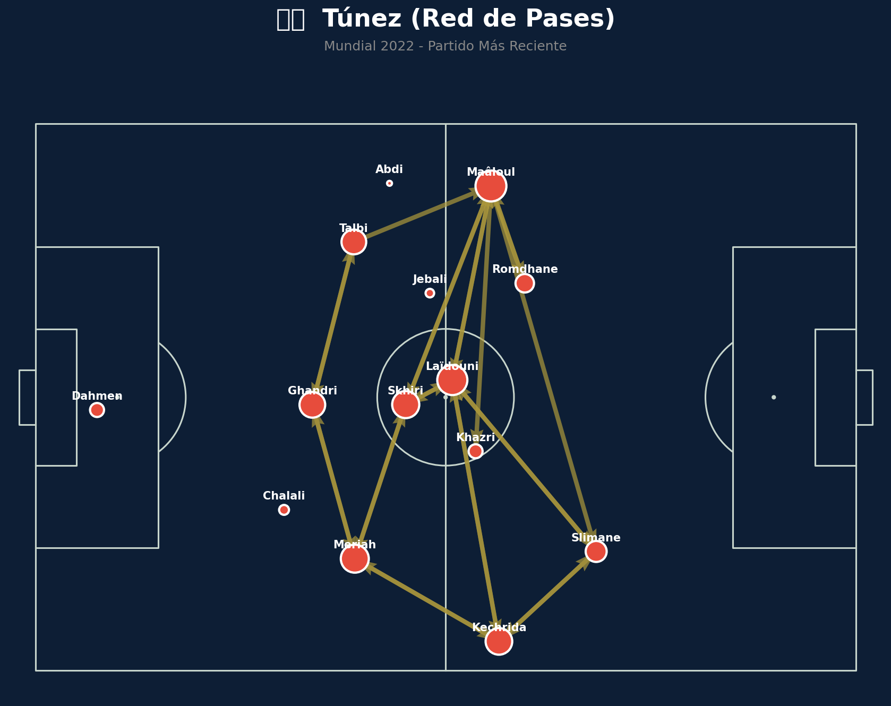
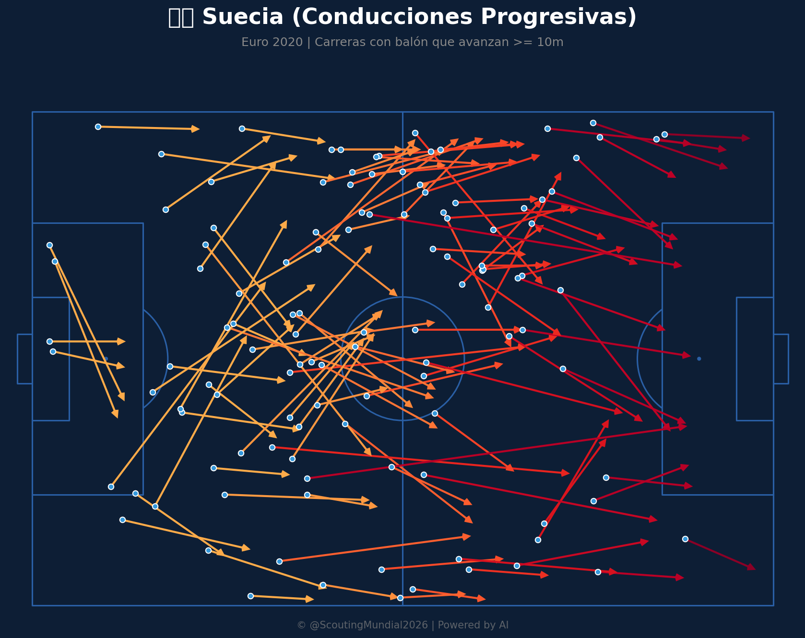
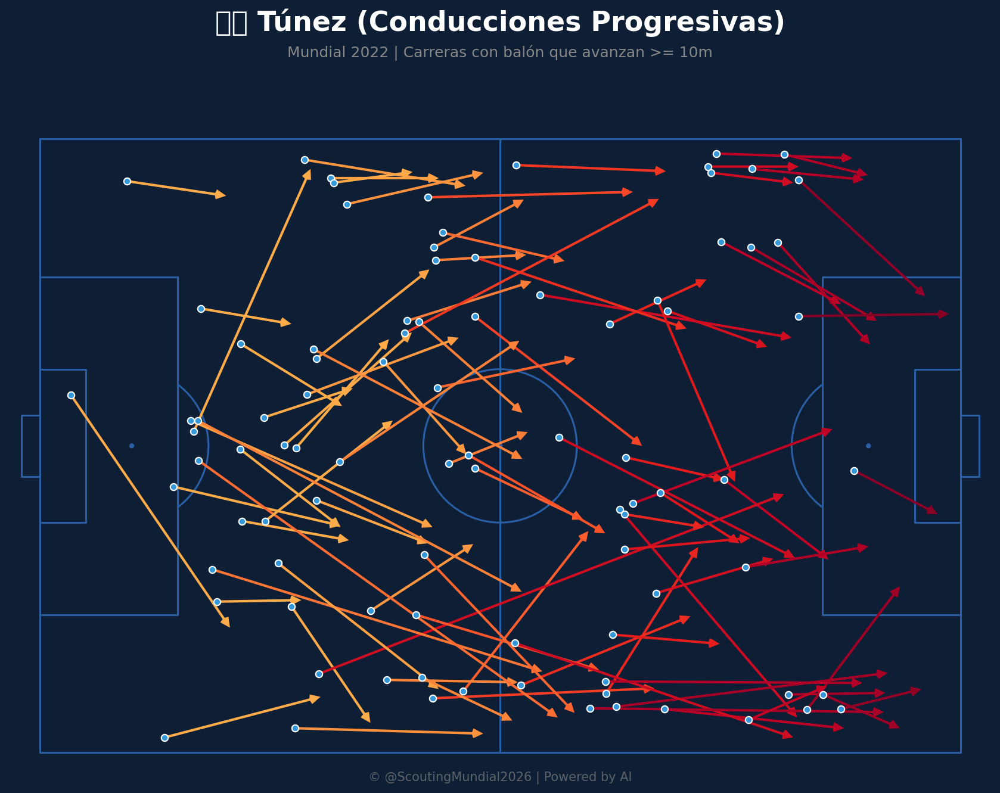
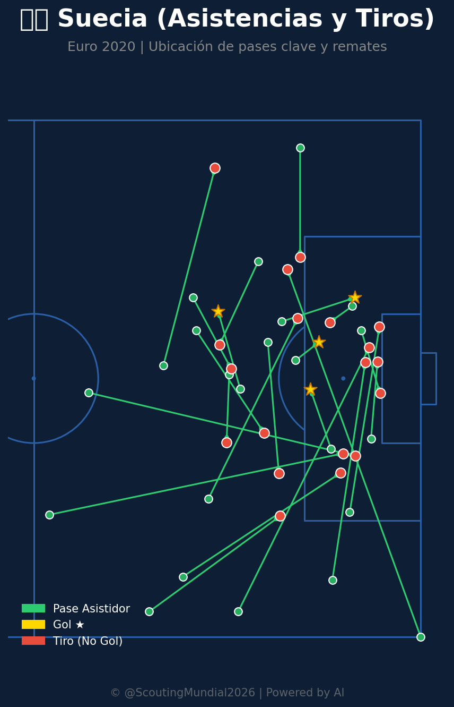
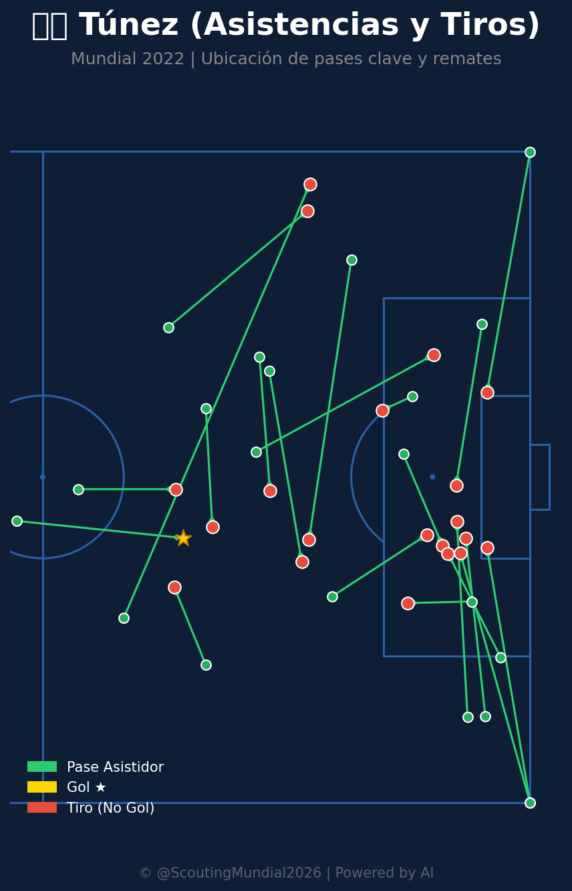